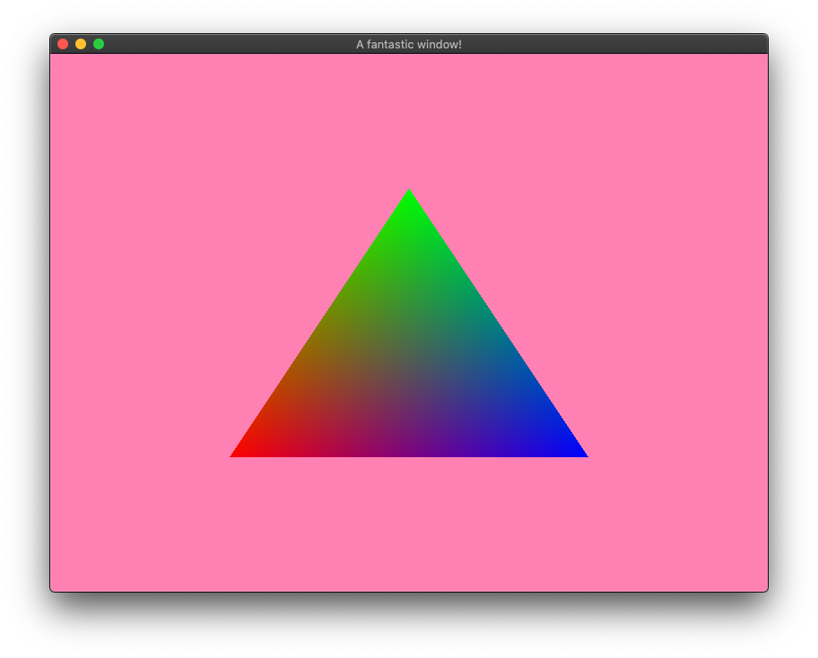
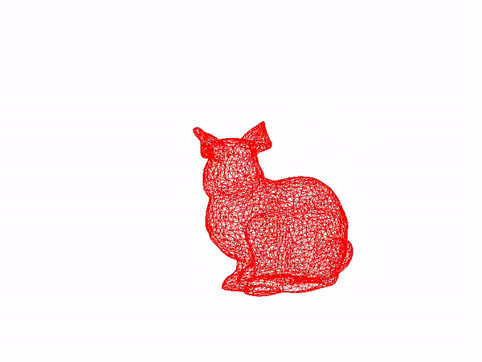

glutinに入門してみる
はじめに
glutin に入門した記録です． Objファイルをロードして，スタンフォードバニーを表示するサンプルプログラムを作成します．
glutinとは
Rustで記述されたOpenGLのラッパーライブラリです． OpenGLのラッパーライブラリには抽象度が高いものから低いものまで様々あります． 本ライブラリは，それらの中でも抽象度が低い，低レベルな機能を提供することを目的としたライブラリです． したがって，OpenGL相当の非常にプリミティブな機能しか提供されていません．
glutinの実装の興味深い点に，ユーザが指定したAPIのバインディングをビルド時に動的に生成する点が挙げられます． この機能の利用方法については， サンプルプログラムの動作を通じて後述します．
サンプルプログラムの解析
サンプルプログラムの実行
リポジトリページにある手順に従ってサンプルプログラムを実行します．
$ git clone https://github.com/rust-windowing/glutin
$ cd glutin
$ cargo run --example windowすると，以下のようなウィンドウが表示されます．

gl_bindings.rsの生成
それでは，このサンプルプログラムの詳細をみていきます．
まず，Cargo.tomlを見てみます．すると，以下のようにbuild.rsがbuild scriptが設定されていることが確認できます．
[package]
name = "glutin_examples"
...
build = "build.rs"
...
[build-dependencies]
gl_generator = "0.14"build.rsを確認すると，１２行目から１４行目において，GLES 2.0のバインディングを生成していることが確認できます． この処理は，gl_generatorを用いて実現されています．
use gl_generator::{Api, Fallbacks, Profile, Registry};
use std::env;
use std::fs::File;
use std::path::PathBuf;
fn main() {
let dest = PathBuf::from(&env::var("OUT_DIR").unwrap());
println!("cargo:rerun-if-changed=build.rs");
let mut file = File::create(&dest.join("gl_bindings.rs")).unwrap();
Registry::new(Api::Gles2, (3, 3), Profile::Core, Fallbacks::All, [])
.write_bindings(gl_generator::StructGenerator, &mut file)
.unwrap();
}次に，実際にどのようあファイルが生成されているかを確認します． 環境変数OUT_DIRはcargoによって設定されてしまうため，任意の値を設定することができません． そこで，以下のように環境変数名を変更します．
$ git diff
diff --git a/glutin_examples/build.rs b/glutin_examples/build.rs
index 77f6fa5..4ff7c4e 100644
--- a/glutin_examples/build.rs
+++ b/glutin_examples/build.rs
@@ -4,7 +4,7 @@ use std::fs::File;
use std::path::PathBuf;
fn main() {
- let dest = PathBuf::from(&env::var("OUT_DIR").unwrap());
+ let dest = PathBuf::from(&env::var("TMP_OUT_DIR").unwrap());
println!("cargo:rerun-if-changed=build.rs");そして，ビルドするとgl_bindings.rsというファイルが作成されていることが確認できます． ファイルの内容を確認すると，GLES 2.0に利用されるデータ構造のバインディングか確認できます．
$ TMP_OUT_DIR=`pwd` cargo build --example window
$ ls gl_bindings.rs
gl_bindings.rs
$ head -n 32 gl_bindings.rs
mod __gl_imports {
pub use std::mem;
pub use std::marker::Send;
pub use std::os::raw;
}
pub mod types {
#![allow(non_camel_case_types, non_snake_case, dead_code, missing_copy_implementations)]
// Common types from OpenGL 1.1
pub type GLenum = super::__gl_imports::raw::c_uint;
pub type GLboolean = super::__gl_imports::raw::c_uchar;
pub type GLbitfield = super::__gl_imports::raw::c_uint;
pub type GLvoid = super::__gl_imports::raw::c_void;
pub type GLbyte = super::__gl_imports::raw::c_char;
pub type GLshort = super::__gl_imports::raw::c_short;
pub type GLint = super::__gl_imports::raw::c_int;
pub type GLclampx = super::__gl_imports::raw::c_int;
pub type GLubyte = super::__gl_imports::raw::c_uchar;
pub type GLushort = super::__gl_imports::raw::c_ushort;
pub type GLuint = super::__gl_imports::raw::c_uint;
pub type GLsizei = super::__gl_imports::raw::c_int;
pub type GLfloat = super::__gl_imports::raw::c_float;
pub type GLclampf = super::__gl_imports::raw::c_float;
pub type GLdouble = super::__gl_imports::raw::c_double;
pub type GLclampd = super::__gl_imports::raw::c_double;
pub type GLeglImageOES = *const super::__gl_imports::raw::c_void;
pub type GLchar = super::__gl_imports::raw::c_char;
pub type GLcharARB = super::__gl_imports::raw::c_char;次に，ターゲットのAPIをApi::Glに変更して'gl_bindings.rsを生成してみます. すると，先ほど生成したgl_bindings.rsとは内容が異なることが確認できます． このように，ターゲットや機能に合わせて，バックエンドを静的に切り替えて使用することが可能です．
$ mv gl_bindings.rs gl_bindings_gles2.rs
$ git diff
diff --git a/glutin_examples/build.rs b/glutin_examples/build.rs
index 77f6fa5..7e149bd 100644
--- a/glutin_examples/build.rs
+++ b/glutin_examples/build.rs
@@ -4,12 +4,12 @@ use std::fs::File;
use std::path::PathBuf;
fn main() {
- let dest = PathBuf::from(&env::var("OUT_DIR").unwrap());
+ let dest = PathBuf::from(&env::var("TMP_OUT_DIR").unwrap());
println!("cargo:rerun-if-changed=build.rs");
let mut file = File::create(&dest.join("gl_bindings.rs")).unwrap();
- Registry::new(Api::Gles2, (3, 3), Profile::Core, Fallbacks::All, [])
+ Registry::new(Api::Gl, (3, 3), Profile::Core, Fallbacks::All, [])
.write_bindings(gl_generator::StructGenerator, &mut file)
.unwrap();
}
$ TMP_OUT_DIR=`pwd` cargo build --example window
$ diff gl_bindings.rs gl_bindings_gles2.rs | head -n 32
121a122
> #[allow(dead_code, non_upper_case_globals)] pub const ACTIVE_ATOMIC_COUNTER_BUFFERS: types::GLenum = 0x92D9;
123a125,126
> #[allow(dead_code, non_upper_case_globals)] pub const ACTIVE_PROGRAM: types::GLenum = 0x8259;
> #[allow(dead_code, non_upper_case_globals)] pub const ACTIVE_RESOURCES: types::GLenum = 0x92F5;
128a132
> #[allow(dead_code, non_upper_case_globals)] pub const ACTIVE_VARIABLES: types::GLenum = 0x9305;
129a134,136
> #[allow(dead_code, non_upper_case_globals)] pub const ALIASED_POINT_SIZE_RANGE: types::GLenum = 0x846D;
> #[allow(dead_code, non_upper_case_globals)] pub const ALL_BARRIER_BITS: types::GLenum = 0xFFFFFFFF;
> #[allow(dead_code, non_upper_case_globals)] pub const ALL_SHADER_BITS: types::GLenum = 0xFFFFFFFF;
130a138
> #[allow(dead_code, non_upper_case_globals)] pub const ALPHA_BITS: types::GLenum = 0x0D55;
133,135d140
< #[allow(dead_code, non_upper_case_globals)] pub const AND: types::GLenum = 0x1501;
< #[allow(dead_code, non_upper_case_globals)] pub const AND_INVERTED: types::GLenum = 0x1504;
< #[allow(dead_code, non_upper_case_globals)] pub const AND_REVERSE: types::GLenum = 0x1502;
136a142
> #[allow(dead_code, non_upper_case_globals)] pub const ANY_SAMPLES_PASSED_CONSERVATIVE: types::GLenum = 0x8D6A;
138a145,152
> #[allow(dead_code, non_upper_case_globals)] pub const ARRAY_SIZE: types::GLenum = 0x92FB;
> #[allow(dead_code, non_upper_case_globals)] pub const ARRAY_STRIDE: types::GLenum = 0x92FE;
> #[allow(dead_code, non_upper_case_globals)] pub const ATOMIC_COUNTER_BARRIER_BIT: types::GLenum = 0x00001000;
> #[allow(dead_code, non_upper_case_globals)] pub const ATOMIC_COUNTER_BUFFER: types::GLenum = 0x92C0;
> #[allow(dead_code, non_upper_case_globals)] pub const ATOMIC_COUNTER_BUFFER_BINDING: types::GLenum = 0x92C1;
> #[allow(dead_code, non_upper_case_globals)] pub const ATOMIC_COUNTER_BUFFER_INDEX: types::GLenum = 0x9301;
> #[allow(dead_code, non_upper_case_globals)] pub const ATOMIC_COUNTER_BUFFER_SIZE: types::GLenum = 0x92C3;
> #[allow(dead_code, non_upper_case_globals)] pub const ATOMIC_COUNTER_BUFFER_START: types::GLenum = 0x92C2;
141,146d154
< #[allow(dead_code, non_upper_case_globals)] pub const BACK_LEFT: types::GLenum = 0x0402;
< #[allow(dead_code, non_upper_case_globals)] pub const BACK_RIGHT: types::GLenum = 0x0403;
< #[allow(dead_code, non_upper_case_globals)] pub const BGR: types::GLenum = 0x80E0;ウィンドウの表示とポリゴンの描画
先ほど実行したサンプルプログラムに対応するコードはこちらになります． それでは，こちらの内容を先頭から紹介していきます．
まずは，supportモジュールと利用するglutinのモジュールのインポートです． supportモジュールは，ポリゴンの生成と描画，頂点シェーダ，フラグメントシェーダなど，サンプルプログラムに表示された三角形を描画するための処理が含まれています．
mod support;
use glutin::event::{Event, WindowEvent};
use glutin::event_loop::{ControlFlow, EventLoop};
use glutin::window::WindowBuilder;
use glutin::ContextBuilder;次にmain関数です．main関数では，まず初めにイベントループ，ウィンドウ，このウインドウと紐づいたGLコンテキストを作成します． コード中のwindowed_contextとは，ウインドウとこのウィンドウに紐づいたGLコンテキストとを表現する構造体になります．
fn main() {
let el = EventLoop::new();
let wb = WindowBuilder::new().with_title("A fantastic window!");
let windowed_context = ContextBuilder::new().build_windowed(wb, &el).unwrap();
let windowed_context = unsafe { windowed_context.make_current().unwrap() };
println!("Pixel format of the window's GL context: {:?}", windowed_context.get_pixel_format());
...
}次にコンテキストの取得を行います．この処理は，support::loadによって実現します． support::loadでは，以下のような処理が実行されます．
- 頂点シェーダとフラグメントシェーダのコンパイル
- シェーダプログラムの作成
- 三角形のポリゴンを表す頂点バッファオブジェクトと頂点配列オブジェクトの作成
- 上記各種リソースのGLコンテキストへの割り当て
このコンテキストは上述のGLコンテキストを内部に持ち，各種描画処理を移譲します．
let gl = support::load(&windowed_context.context());最後にイベントハンドラです．このイベントハンドラは先ほど作成したイベントループ渡され，何かイベントが発生するたびに呼び出されます． 従って，イベントハンドラでは，発生したイベントの識別とそのイベントに対応する振る舞いを記述する必要があります． 各イベントに対する振る舞いについては，コード中にコメントとして追記しました．
el.run(move |event, _, control_flow| {
println!("{:?}", event);
*control_flow = ControlFlow::Wait;
match event {
Event::LoopDestroyed => return, // イベントループか破棄されたのでインベントハンドラから抜ける
Event::WindowEvent { event, .. } => match event {
WindowEvent::Resized(physical_size) => windowed_context.resize(physical_size), // ウインドウをリサイズ
WindowEvent::CloseRequested => *control_flow = ControlFlow::Exit, // ウインドウを閉じる
_ => (),
},
Event::RedrawRequested(_) => {
gl.draw_frame([1.0, 0.5, 0.7, 1.0]); // ポリゴンの描画．
windowed_context.swap_buffers().unwrap(); // オフスクリーンに描画した結果を表示する
}
_ => (),
}
});スタンフォードバニーを表示する
Objファイルを読み取り，スタンフォードバニーを描画するサンプルプログラムを作成しました． このサンプルを実行すると，以下のような画面が表示されます．

全体の構成は，glutinのサンプルプログラムを大きく変更はありません， 従って，比較的容易に読み取ることが可能かと思います． しかしながら，幾つか新しい試みを行っているため，それらについて紹介します．
gl_bindings.rsのソースツリーへの取り込み
前述した通り，gl_bindings.rsはビルド時に動的に生成されます．従って，これらが提供する型を編集時に取得することはできません． そのため，このままではコード補完や静的解析を行うことができません． Rustによる開発では，これらのツールは非常に重要であるため，このままでは非常に辛い開発が強いられます．
そこで，gl_buildings.rsをソースツリーに取り込んでしまうことにしました． 具体的には，以下のようにgl_bindings.rsの保存先を変更します．
fn main() {
let mut dest = PathBuf::from(env!("CARGO_MANIFEST_DIR"));
dest.push("src");
println!("cargo:rerun-if-changed=build.rs");
let mut file = File::create(&dest.join("gl_bindings.rs")).unwrap();
Registry::new(Api::Gl, (3, 1), Profile::Core, Fallbacks::All, [])
.write_bindings(gl_generator::StructGenerator, &mut file)
.unwrap();
}この変更により，初回のビルド以降は以下のようにgl_bindings.rsがソースツリー内に存在します． 従って，コード補完や静的解析が適切に動作します．
$ ls ./src
context.rs gl_bindings.rs main.rs obj.rs shader.rs注意点としては，gl_bindings.rsは動的に生成されるものなのでリポジトリに含んではいけないことです． 従って，以下のように.gitignoreに追加します．
$ cat .gitignore
src/gl_bindings.rs
targetObjファイルについて
Objファイルと呼ばれるファイルフォーマットには様々なものがあります． ここで使用するのは，3Dモデルを表現するために用いられるObjファイルです． また，Objファイルは頂点，面，法線など様々なデータを格納することができます． ここでは，以下のように頂点とそれらによって構成される面のみを対象とします．
v <頂点番号1> <X座標1> <Y座標1> <Z座標1>
v <頂点番号2> <X座標2> <Y座標2> <Z座標2>
...
f <面番号1> <頂点番号i> <頂点番号j> <頂点番号k>
...